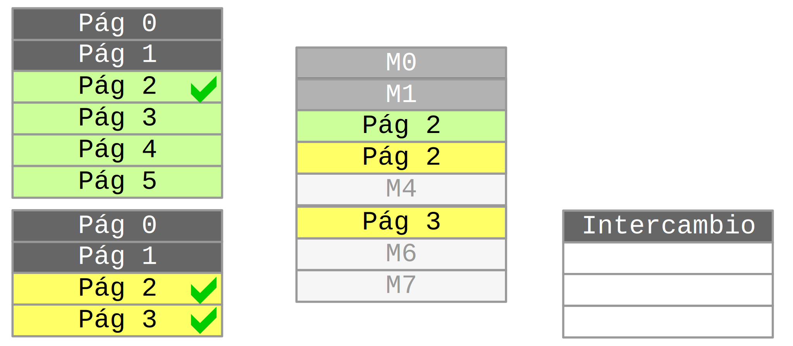
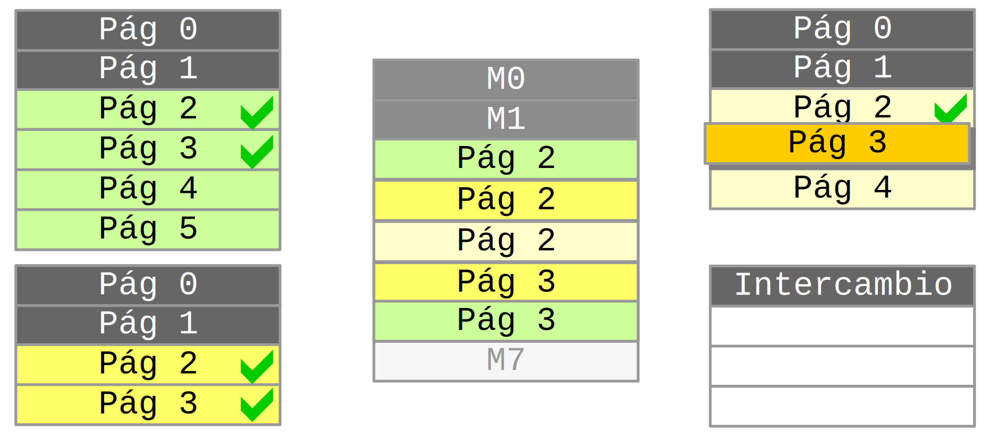
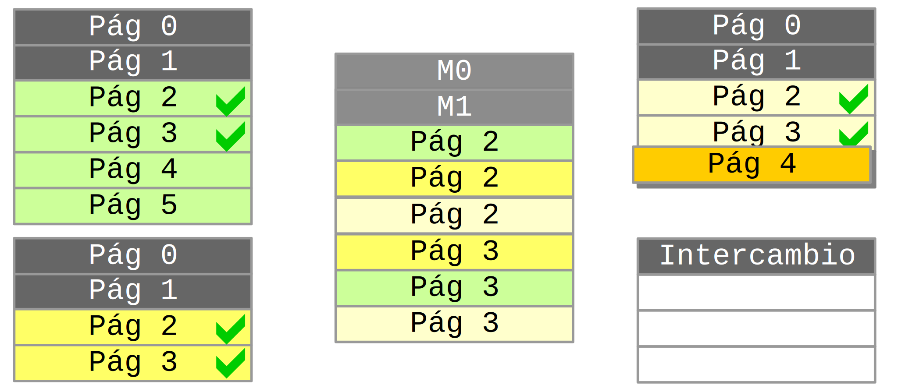
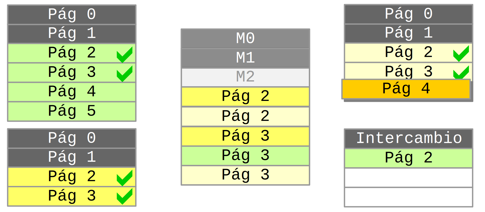
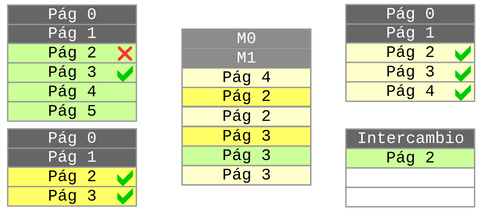

Expresión general
Todo número $n$ se escribe en base $b$ como
$n = x_k * b^k + \ldots + x_{2} * b^{2} + x_1 * b^1 +x_0 * b^0$
Con $0 \le x_i \lt b$
$2016 = 2 * 1000 + 0 * 100 + 1 * 10 + 6 * 1$
Desafío
- Adoptemos la notación $x = (x_{n-1}, ... , x_1, x_0)$ para un número en $C^n_2$, es decir, en complemento a 2 sobre $n$ bits
- Con la notación anterior, comprobar que $x = $ $-1 \times x_{n-1} \times 2^{n-1} + x_{n-2} \times 2^{n-2} +$ $...$ $+ x_1 \times 2 + x_0 =$ $-x_{n-1} \times 2^{n-1}+ \sum_{i=0}^{n-2}({x_i \times 2^i})$
- Con la misma notación, pero si $x$ está en Signo-magnitud, ¿cuál es la expresión de $x$ como función de los dígitos binarios $x_i$?
Preguntas
Signo-Magnitud en 8 bits
- $9_{(10} = X_{(2} =$ $00001001$
- $-9_{(10} = X_{(2} =$ $10001001$
- $50_{(10} = X_{(2} =$ $00110010$
- $-50_{(10} = X_{(2} =$ $10110010$
- $-128_{(10} = X_{(2} =$ Imposible
- $10000000_{(2} = X_{(10} =$ ¿Y $00000000_{(2}$?
Bits de acarreo o carry

Arquitectura de Von Neumann

Arquitectura de Von Neumann

Arquitectura de Von Neumann

Arquitectura de Von Neumann

Arquitectura de Von Neumann

Arquitectura de Von Neumann

Traza de ejecución
| Búsqueda | Decodificación | Ejecución |
|---|
| PC | IR | Cod | Operando | Ac | Mem | Salida | PC |
| 00000000 | 01000110 | 010 | 00110 | 00001100 | - | - | 00000001 |
| 00000001 | 10000111 | 100 | 00111 | 00001101 | - | - | 00000010 |
| 00000010 | 01101000 | 011 | 01000 | 00001101 | 8 ← 00001101 | - | 00000011 |
| 00000011 | 00100000 | 001 | 00000 | 00001101 | - | - | 00000011 |
| | | | | | | |
| Dirección | Contenido |
|---|
| 00000 | 01000110 |
| 00001 | 10000111 |
| 00010 | 01101000 |
| 00011 | 00100000 |
| 00100 | |
| 00101 | |
| 00110 | 00001100 |
| 00111 | 00000001 |
| 01000 | 00001101 |
Intel I7
Intel I7
Intel I7
Intel I7
Intel I7
Swapping o intercambio

Swapping o intercambio

Swapping o intercambio

Swapping o intercambio

Swapping o intercambio

Swapping o intercambio

Swapping o intercambio

Swapping o intercambio

Swapping o intercambio

Estados de los procesos
Sistema multiprogramado
Estados de los procesos
Sistema multiprogramado

Estados de los procesos
Sistema multiprogramado

Estados de los procesos
Tiempo compartido o time sharing

Procesos concurrentes

Procesos concurrentes

Procesos concurrentes

Procesos paralelos

Memorias
Parámetros de onda
| Frecuencia: | |
Amplitud: | |
Muestras: | |
Cálculo de punto flotante
| Decimal | |
| Signo | |
| Exponente | |
| Mantisa | |
| Hexa | |
$ $
# Generar programáticamente contenidos
Tabla de códigos ASCII
| 32 | | 44 | , | 56 | 8 | 68 | D | 80 | P | 92 | \ | 104 | h | 116 | t |
| 33 | ! | 45 | - | 57 | 9 | 69 | E | 81 | Q | 93 | ] | 105 | i | 117 | u |
| 34 | " | 46 | . | 58 | : | 70 | F | 82 | R | 94 | ^ | 106 | j | 118 | v |
| 35 | # | 47 | / | 59 | ; | 71 | G | 83 | S | 95 | _ | 107 | k | 119 | w |
| 36 | $ | 48 | 0 | 60 | < | 72 | H | 84 | T | 96 | ` | 108 | l | 120 | x |
| 37 | % | 49 | 1 | 61 | = | 73 | I | 85 | U | 97 | a | 109 | m | 121 | y |
| 38 | & | 50 | 2 | 62 | > | 74 | J | 86 | V | 98 | b | 110 | n | 122 | z |
| 39 | ' | 51 | 3 | 63 | ? | 75 | K | 87 | W | 99 | c | 111 | o | 123 | { |
| 40 | ( | 52 | 4 | 64 | @ | 76 | L | 88 | X | 100 | d | 112 | p | 124 | | |
| 41 | ) | 53 | 5 | 65 | A | 77 | M | 89 | Y | 101 | e | 113 | q | 125 | } |
| 42 | * | 54 | 6 | 66 | B | 78 | N | 90 | Z | 102 | f | 114 | r | 126 | ~ |
| 43 | + | 55 | 7 | 67 | C | 79 | O | 91 | [ | 103 | g | 115 | s | 127 | |
Datos de la imagen
- ¿Cómo comunicar esta imagen a otro programa u otra computadora?
- ¿Qué falta especificar para poder reconstruir esta imagen?
Datos de la imagen
- ¿En cuántos bits se expresa la paleta? ¿Cuáles son el ancho y el alto?
- Definir un formato con dimensiones y resolución de la imagen
Routers

Clementina
Traductores
- Compiladores
- La ejecución de un programa compilado es tan rápida como es posible
- El programa queda compilado para una única arquitectura
- Intérpretes
- La ejecución del programa comparte la CPU con la traducción del fuente
- El mismo programa fuente puede correr sin modificaciones en varias arquitecturas
Usando Linux
Un emulador de PC en Javascript, corriendo Linux
Diapositiva 559
Fin de la teoría